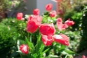
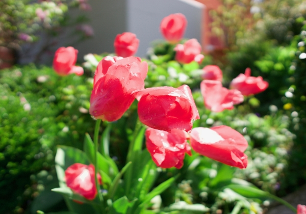

<!doctype html>
<html lang="zh" class="no-js" data-level="1">
	<!-- Generated by jAlbum app (https://jalbum.net) -->
	<head>
		<meta charset="UTF-8">
		<meta http-equiv="x-ua-compatible" content="ie=edge">
		<meta name="viewport" content="width=device-width, initial-scale=1.0">
		<link rel="preload" href="../res/icon/skinicon-thin.woff?v3.5.3" as="font" type="font/woff" crossorigin>
		<link rel="preload" href="../res/icon/skinicon-thin.ttf?v3.5.3" as="font" type="font/ttf" crossorigin>
		<link rel="prefetch" href="../res/icon/skinicon-thin.svg?v3.5.3" as="font">
		<title>2023.04 列支敦士登</title>
		<meta name="description" content="2023.04 列支敦士登">
		<meta name="generator" content="jAlbum 34.3.1 & Lucid 3.5.3 [Ice]">
		<meta property="og:image" content="shareimage.jpg">
		<meta property="og:image:width" content="600">
		<meta property="og:image:height" content="420">
		<link rel="image_src" href="shareimage.jpg">
		<meta name="twitter:image" content="shareimage.jpg">
		<meta property="og:title" content="2023.04 列支敦士登">
		<meta property="og:description" content="">
		<meta property="og:type" content="website">
		<meta name="twitter:title" content="2023.04 列支敦士登">
		<meta name="twitter:card" content="summary">
		<meta name="apple-mobile-web-app-status-bar-style" content="black-translucent">
		<meta name="apple-mobile-web-app-capable" content="yes">
		<meta name="format-detection" content="telephone=no">
		<link rel="apple-touch-icon" sizes="180x180" href="../res/apple-touch-icon.png">
		<link rel="icon" type="image/png" sizes="32x32" href="../res/favicon-32x32.png">
		<link rel="icon" type="image/png" sizes="16x16" href="../res/favicon-16x16.png">
		<link rel="manifest" href="../res/site.webmanifest" crossorigin="use-credentials">
		<link rel="mask-icon" href="../res/safari-pinned-tab.svg" color="#d9e3ee">
		<link rel="icon" href="../res/favicon.ico">
		<meta name="msapplication-TileColor" content="#d9e3ee">
		<meta name="msapplication-config" content="../res/browserconfig.xml">
		<meta name="theme-color" content="#d9e3ee">
		<link rel="stylesheet" href="../res/common.css?v=3.5.3">
	<link rel="alternate" href="album.rss" type="application/rss+xml">
</head>
	<body id="index" class="index light-mode sub-album has-lightbox has-title icon-thin">
		<div id="main" class="main paused windowed">
			<aside class="top-bar">
				<div id="controls" class="controls">
					<div class="title for-small btn" data-autoclose="3000" data-rel="folderinfo"><h1>2023.04 列支敦士登</h1><span class="icon-caret-down"></span></div>
					<div class="group1"><a class="icon-one-level-up btn" href="../index.html"> <span>Back</span></a><a id="topnav-toggle" data-autoclose="3000"class="icon-menu btn" data-rel="topnav"><span class="icon-caret-down"></span></a><a class="icon-thumbnails btn" data-rel="thumbnails"><span>Thumbnails</span></a><div class="title for-medium btn" data-autoclose="3000" data-rel="folderinfo"><h1>2023.04 列支敦士登</h1><span class="icon-caret-down"></span></div><a class="icon-connect btn" data-autoclose="3000" data-rel="social"><span>Share</span></a></div>
					<div class="group2"><div id="numbers" class="numbers"></div><a class="icon-arrow-left btn previous"><span>Previous</span></a><div class="playpause"><a class="icon-play btn play"><span>Start</span></a><a class="icon-pause btn pause"><div class="progress"></div></a></div><a class="icon-arrow-right btn next"><span>Next</span></a></div>
				</div>

				<section id="panels" class="panels">
					<div id="topnav" class="topnav-cont panel"><div class="topnav scrollable"><div class="home"><a href="../index.html">Life.DayDay.Plus</a></div><ul class="menu"><li><a href="../2026.04.20%20%E8%8B%8F%E9%BB%8E%E4%B8%96%E5%85%AD%E9%B8%A3%E8%8A%82/index.html">2026.04.20 苏黎世六鸣节</a></li><li><a href="../2026.04.06%20%E8%8B%8F%E9%BB%8E%E4%B8%96%20Forch-Pfannenstiel%E5%BE%92%E6%AD%A5/index.html">2026.04.06 苏黎世 Forch-Pfannenstie&hellip;</a></li><li><a href="../2025.12.31%20%E5%8D%A2%E5%8A%A0%E8%AF%BA%E3%80%81%E6%B4%9B%E8%BF%A6%E8%AF%BA%E3%80%81%E8%B4%9D%E6%9E%97%E4%BD%90%E7%BA%B3/index.html">2025.12.31 卢加诺、洛迦诺、贝林佐纳</a></li><li><a href="../2025.10.2-6%20%E6%96%B0%E7%96%86%E5%8D%97%E7%96%86%E4%B9%8B%E6%97%85/index.html">2025.10.2-6 新疆南疆之旅</a></li><li><a href="../2025.02.05%20%E8%A5%BF%E5%AE%89%E5%A4%A7%E5%85%B4%E5%96%84%E5%AF%BA/index.html">2025.02.05 西安大兴善寺</a></li><li><a href="../2025.02.04%20%E8%A5%BF%E5%AE%89%E6%98%86%E6%98%8E%E6%B1%A0/index.html">2025.02.04 西安昆明池</a></li><li><a href="../2025.01.31%20%E9%93%9C%E5%B7%9D/index.html">2025.01.31 铜川</a></li><li><a href="../2025.01.27%20%E9%A3%9E%E6%9C%BA%E4%B8%8A%E4%BF%AF%E7%9E%B0%E5%A4%A7%E5%9C%B0%E7%BA%B9%E7%90%86/index.html">2025.01.27 飞机上俯瞰大地纹理</a></li><li><a href="../2024.12.25-26%20%E5%8D%A1%E8%90%A8%E5%B8%83%E5%85%B0%E5%8D%A1/index.html">2024.12.25-26 卡萨布兰卡</a></li><li><a href="../2024.12.24%20%E9%87%8C%E6%96%AF%E6%9C%AC/index.html">2024.12.24 里斯本</a></li><li><a href="../2024.12.07-08%20%E4%BC%8A%E6%96%AF%E5%9D%A6%E5%B8%83%E5%B0%94/index.html">2024.12.07-08 伊斯坦布尔</a></li><li><a href="../2024.11.24%20%E6%B3%95%E5%9B%BD%E6%B3%A2%E5%B0%94%E5%A4%9A/index.html">2024.11.24 法国波尔多</a></li><li><a href="../2024.11.23%20%E6%B3%95%E5%9B%BD%E6%96%AF%E7%89%B9%E6%8B%89%E6%96%AF%E5%A0%A1/index.html">2024.11.23 法国斯特拉斯堡</a></li><li><a href="../2024.11.09-10%20%E6%9F%8F%E6%9E%97/index.html">2024.11.09-10 柏林</a></li><li><a href="../2024.08.24-25%20%E5%B8%83%E8%BE%BE%E4%BD%A9%E6%96%AF/index.html">2024.08.24-25 布达佩斯</a></li><li><a href="../2024.08.10%20%E5%B7%B4%E9%BB%8E/index.html">2024.08.10 巴黎</a></li><li><a href="../2024.07.06%20%E6%85%95%E5%B0%BC%E9%BB%91/index.html">2024.07.06 慕尼黑</a></li><li><a href="../2024.06.23-24%20%E5%8C%97%E4%BA%AC/index.html">2024.06.23-24 北京</a></li><li><a href="../2024.06.12-15%20%E4%B8%89%E4%BA%9A%E4%B9%8B%E6%97%85/index.html">2024.06.12-15 三亚之旅</a></li><li><a href="../2024.06.10%20%E7%A4%BC%E6%B3%89/index.html">2024.06.10 礼泉</a></li><li><a href="../2024.06.09%20%E8%A5%BF%E5%AE%89%E5%A4%A7%E5%94%90%E8%8A%99%E8%93%89%E5%9B%AD/index.html">2024.06.09 西安大唐芙蓉园</a></li><li><a href="../2024.04.27%20%E6%98%A5%E5%A4%A9Uetliberg%E5%BE%92%E6%AD%A5/index.html">2024.04.27 春天Uetliberg徒步</a></li><li><a href="../2024.04.20%20%E9%9B%A8%E5%90%8E%E8%8B%8F%E9%BB%8E%E4%B8%96/index.html">2024.04.20 雨后苏黎世</a></li><li><a href="../2023.12.19-22%20%E5%9C%A3%E8%AF%9E%E6%97%85%E8%A1%8CDAY5-8%20%E7%BD%97%E9%A9%AC%E6%AF%94%E8%90%A8/index.html">2023.12.19-22 圣诞旅行DAY5-8 罗马比萨</a></li><li><a href="../2023.12.18%20%E5%9C%A3%E8%AF%9E%E6%97%85%E8%A1%8CDAY4%20-%20%E9%9B%85%E5%85%B8%E5%9F%8E%E5%B8%82/index.html">2023.12.18 圣诞旅行DAY4 - 雅典城市</a></li><li><a href="../2023.12.17%20%E5%9C%A3%E8%AF%9E%E6%97%85%E8%A1%8CDAY3%20-%20%E9%9B%85%E5%85%B8Aegean%E5%B2%9B/index.html">2023.12.17 圣诞旅行DAY3 - 雅典Aegean岛</a></li><li><a href="../2023.12.16%20%E5%9C%A3%E8%AF%9E%E6%97%85%E8%A1%8CDAY2%20-%20FCO%E6%9C%BA%E5%9C%BA%EF%BC%8C%E9%9B%85%E5%85%B8/index.html">2023.12.16 圣诞旅行DAY2 - FCO机场，雅典</a></li><li><a href="../2023.12.15%20%E5%9C%A3%E8%AF%9E%E6%97%85%E8%A1%8CDAY1%20-%20%E5%B7%B4%E5%A1%9E%E5%B0%94%E6%9C%BA%E5%9C%BA/index.html">2023.12.15 圣诞旅行DAY1 - 巴塞尔机场</a></li><li><a href="../2023.12.09%20%E8%8B%8F%E9%BB%8E%E4%B8%96Irchel%E5%85%AC%E5%9B%AD/index.html">2023.12.09 苏黎世Irchel公园</a></li><li><a href="../2023.12.03%20%E5%86%AC%E5%A4%A9%E7%9A%84%E8%8B%8F%E9%BB%8E%E4%B8%96%E6%9C%BA%E5%9C%BA/index.html">2023.12.03 冬天的苏黎世机场</a></li><li><a href="../2023.09.09%20Kanstanz/index.html">2023.09.09 Kanstanz</a></li><li><a href="../2023.09.02%20%E8%8B%8F%E9%BB%8E%E4%B8%96%E8%80%81%E5%9F%8E/index.html">2023.09.02 苏黎世老城</a></li><li><a href="../2023.08.19%20%E8%8E%B1%E8%8C%B5%E7%80%91%E5%B8%83/index.html">2023.08.19 莱茵瀑布</a></li><li><a href="../2023.07.30%20%E8%8B%8F%E9%BB%8E%E4%B8%96%E6%97%A5%E5%B8%B8/index.html">2023.07.30 苏黎世日常</a></li><li><a href="../2023.07.22%20Pilatus%E5%B1%B1/index.html">2023.07.22 Pilatus山</a></li><li><a href="../2023.07.15%20%E8%8B%8F%E9%BB%8E%E4%B8%96%20Uetliberg/index.html">2023.07.15 苏黎世 Uetliberg</a></li><li><a href="../2023.07.14%20%E8%8B%8F%E9%BB%8E%E4%B8%96%E5%BB%B6%E6%97%B6%E6%91%84%E5%BD%B1/index.html">2023.07.14 苏黎世延时摄影</a></li><li><a href="../2023.07.08%20Zuri%20Fascht/index.html">2023.07.08 Zuri Fascht</a></li><li><a href="../2023.07.07%20%E8%8B%8F%E9%BB%8E%E4%B8%96%E6%8B%8D%E6%9C%BA/index.html">2023.07.07 苏黎世拍机</a></li><li><a href="../2023.07.02%20%E5%AE%B6%E6%97%81%E7%9A%84%E8%8A%B1/index.html">2023.07.02 家旁的花</a></li><li><a href="../2023.07.01%20%E8%8B%8F%E9%BB%8E%E4%B8%96%E6%9C%BA%E5%9C%BA/index.html">2023.07.01 苏黎世机场</a></li><li><a href="../2023.06.19%20%E8%A5%BF%E5%AE%89%E4%BA%A4%E5%A4%A7%E5%88%9B%E6%96%B0%E6%B8%AF/index.html">2023.06.19 西安交大创新港</a></li><li><a href="../2023.06%20%E8%A5%BF%E9%AA%86%E5%B3%AA%E6%B0%B4%E5%BA%93/index.html">2023.06 西骆峪水库</a></li><li><a href="../2023.06%20%E8%A5%BF%E5%AE%89%E5%85%B4%E5%BA%86%E5%AE%AB/index.html">2023.06 西安兴庆宫</a></li><li><a href="../2023.06%20%E8%8B%8F%E9%BB%8E%E4%B8%96%E6%89%AB%E8%A1%97/index.html">2023.06 苏黎世扫街</a></li><li><a href="../2023.06%20%E7%A4%BC%E6%B3%89%E8%A2%81%E5%AE%B6%E6%9D%91/index.html">2023.06 礼泉袁家村</a></li><li><a href="../2023.06%20%E5%92%B8%E9%98%B3/index.html">2023.06 咸阳</a></li><li><a href="../2023.05%20%E6%97%A5%E5%86%85%E7%93%A6%2C%20%E6%B4%9B%E6%A1%91/index.html">2023.05 日内瓦, 洛桑</a></li><li><a href="../2023.05%20%E5%B7%B4%E5%A1%9E%E7%BD%97%E9%82%A3/index.html">2023.05 巴塞罗那</a></li><li class="actual"><a href="../2023.04%20%E5%88%97%E6%94%AF%E6%95%A6%E5%A3%AB%E7%99%BB/index.html">2023.04 列支敦士登</a></li><li><a href="../2023.04%20Stoos%E5%B1%B1/index.html">2023.04 Stoos山</a></li><li><a href="../2022.11%20%E5%8D%A2%E5%A1%9E%E6%81%A9/index.html">2022.11 卢塞恩</a></li><li><a href="../2022.08%20%E8%8B%8F%E9%BB%8E%E4%B8%96/index.html">2022.08 苏黎世</a></li><li><a href="../2020.07.05%20%E7%91%9E%E5%A3%AB%E9%BE%99%E7%96%86Lungern/index.html">2020.07.05 瑞士龙疆Lungern</a></li><li><a href="../2020.02.12-13%20%E7%91%9E%E5%A3%ABBrigels/index.html">2020.02.12-13 瑞士Brigels</a></li><li><a href="../2019.12.28%20%E7%91%9E%E5%A3%AB%E5%B0%91%E5%A5%B3%E5%B3%B0/index.html">2019.12.28 瑞士少女峰</a></li><li><a href="../2019.12.19%20%E7%91%9E%E5%A3%ABRigi%E5%B1%B1/index.html">2019.12.19 瑞士Rigi山</a></li><li><a href="../2019.11.02%20%E6%84%8F%E5%A4%A7%E5%88%A9%E7%B1%B3%E5%85%B0/index.html">2019.11.02 意大利米兰</a></li><li class="has-submenu"><a href="../999%E5%9B%BE%E5%BA%8A/index.html">999图床</a><ul class="menu"><li><a href="../999%E5%9B%BE%E5%BA%8A/20240604/index.html">20240604</a></li></ul></li></ul></div></div>
					<div id="thumbnails" class="thumbnails masonry off"><div class="thumb-cont scrollable"><a class="thumb preload active landscape" href="slides/443494EB-671A-4FB2-8397-DD1DDE3C1297.jpeg" data-vars='{"thumb":"443494EB-671A-4FB2-8397-DD1DDE3C1297.jpeg","title":"鲜花","type":"image","width":1500,"height":1000,"thumbWidth":180,"thumbHeight":120,"caption":"<div class=_#34_title_#34_>鲜花</div>"}' title="<div class=&#34;title&#34;>鲜花</div>"></a><a class="thumb preload landscape" href="slides/D3A8BE33-118D-4ABD-BE99-B6E43E348212.jpeg" data-vars='{"thumb":"D3A8BE33-118D-4ABD-BE99-B6E43E348212.jpeg","title":"板凳上的饰品","type":"image","width":1500,"height":1000,"thumbWidth":180,"thumbHeight":120,"caption":"<div class=_#34_title_#34_>板凳上的饰品</div>"}' title="<div class=&#34;title&#34;>板凳上的饰品</div>"></a><a class="thumb preload landscape" href="slides/7B0947FF-922E-4BD3-B184-0869E85EB1E4.jpeg" data-vars='{"thumb":"7B0947FF-922E-4BD3-B184-0869E85EB1E4.jpeg","title":"树下的狗狗","type":"image","width":1900,"height":795,"thumbWidth":200,"thumbHeight":84,"caption":"<div class=_#34_title_#34_>树下的狗狗</div>"}' title="<div class=&#34;title&#34;>树下的狗狗</div>"></a><a class="thumb preload landscape" href="slides/DCFA6725-D827-471B-B50D-3D4D1B629364.jpeg" data-vars='{"thumb":"DCFA6725-D827-471B-B50D-3D4D1B629364.jpeg","title":"山景","type":"image","width":1900,"height":490,"thumbWidth":200,"thumbHeight":60,"caption":"<div class=_#34_title_#34_>山景</div>"}' title="<div class=&#34;title&#34;>山景</div>"></a><a class="thumb preload landscape" href="slides/E5E699A5-C7FE-4A78-A01E-3373473ECE39.jpeg" data-vars='{"thumb":"E5E699A5-C7FE-4A78-A01E-3373473ECE39.jpeg","title":"木制饰品","type":"image","width":1500,"height":1000,"thumbWidth":180,"thumbHeight":120,"caption":"<div class=_#34_title_#34_>木制饰品</div>"}' title="<div class=&#34;title&#34;>木制饰品</div>"></a><a class="thumb preload landscape" href="slides/8D64BE44-6BD1-461B-BCD6-E6E2041EA3D1.jpeg" data-vars='{"thumb":"8D64BE44-6BD1-461B-BCD6-E6E2041EA3D1.jpeg","title":"昂着头的鸭子","type":"image","width":1500,"height":1000,"thumbWidth":180,"thumbHeight":120,"caption":"<div class=_#34_title_#34_>昂着头的鸭子</div>"}' title="<div class=&#34;title&#34;>昂着头的鸭子</div>"></a><a class="thumb preload landscape" href="slides/5819CDCA-6A6A-4F74-B62F-F3CA62D1DBA5.jpeg" data-vars='{"thumb":"5819CDCA-6A6A-4F74-B62F-F3CA62D1DBA5.jpeg","title":"瓦杜茨景色","type":"image","width":1500,"height":1000,"thumbWidth":180,"thumbHeight":120,"caption":"<div class=_#34_title_#34_>瓦杜茨景色</div>"}' title="<div class=&#34;title&#34;>瓦杜茨景色</div>"></a><a class="thumb preload landscape" href="slides/ACA436EB-039D-428F-A8E5-234F28A93450.jpeg" data-vars='{"thumb":"ACA436EB-039D-428F-A8E5-234F28A93450.jpeg","title":"俯瞰","type":"image","width":1500,"height":1000,"thumbWidth":180,"thumbHeight":120,"caption":"<div class=_#34_title_#34_>俯瞰</div>"}' title="<div class=&#34;title&#34;>俯瞰</div>"></a><a class="thumb preload landscape" href="slides/61508151-1841-4970-AF6E-DFB6FC3BE0E1.jpeg" data-vars='{"thumb":"61508151-1841-4970-AF6E-DFB6FC3BE0E1.jpeg","title":"路标","type":"image","width":1500,"height":1000,"thumbWidth":180,"thumbHeight":120,"caption":"<div class=_#34_title_#34_>路标</div>"}' title="<div class=&#34;title&#34;>路标</div>"></a><a class="thumb preload landscape" href="slides/102FCC97-C20B-4EDD-B5AA-F2B65923D615.jpeg" data-vars='{"thumb":"102FCC97-C20B-4EDD-B5AA-F2B65923D615.jpeg","title":"野花","type":"image","width":1500,"height":1000,"thumbWidth":180,"thumbHeight":120,"caption":"<div class=_#34_title_#34_>野花</div>"}' title="<div class=&#34;title&#34;>野花</div>"></a><a class="thumb preload portrait" href="slides/ADB751D6-E2E2-4EAE-8CD0-999ADA15D6E0.jpeg" data-vars='{"thumb":"ADB751D6-E2E2-4EAE-8CD0-999ADA15D6E0.jpeg","title":"拱门","type":"image","width":667,"height":1000,"thumbWidth":90,"thumbHeight":120,"caption":"<div class=_#34_title_#34_>拱门</div>"}' title="<div class=&#34;title&#34;>拱门</div>"></a><a class="thumb preload landscape" href="slides/2D5A581A-5EA8-4687-9C3A-5DEAE7F21B87.jpeg" data-vars='{"thumb":"2D5A581A-5EA8-4687-9C3A-5DEAE7F21B87.jpeg","title":"列支敦士登行人道","type":"image","width":1500,"height":1000,"thumbWidth":180,"thumbHeight":120,"caption":"<div class=_#34_title_#34_>列支敦士登行人道</div>"}' title="<div class=&#34;title&#34;>列支敦士登行人道</div>"></a><a class="thumb preload landscape" href="slides/8CEA1062-DF96-4FA8-ADC9-BA43FD82AB8E.jpeg" data-vars='{"thumb":"8CEA1062-DF96-4FA8-ADC9-BA43FD82AB8E.jpeg","title":"列支敦士登博物馆里的明信片","type":"image","width":1500,"height":1000,"thumbWidth":180,"thumbHeight":120,"caption":"<div class=_#34_title_#34_>列支敦士登博物馆里的明信片</div>"}' title="<div class=&#34;title&#34;>列支敦士登博物馆里的明信片</div>"></a><a class="thumb preload landscape" href="slides/1F0FAD7F-2222-460A-910E-D9EDB1CF9628.jpeg" data-vars='{"thumb":"1F0FAD7F-2222-460A-910E-D9EDB1CF9628.jpeg","title":"奇特的小雕像","type":"image","width":1500,"height":1000,"thumbWidth":180,"thumbHeight":120,"caption":"<div class=_#34_title_#34_>奇特的小雕像</div>"}' title="<div class=&#34;title&#34;>奇特的小雕像</div>"></a><a class="thumb preload landscape" href="slides/CAE4D348-FF46-4ED8-93F7-EAEA64341997.jpeg" data-vars='{"thumb":"CAE4D348-FF46-4ED8-93F7-EAEA64341997.jpeg","title":"狐狸","type":"image","width":1500,"height":1000,"thumbWidth":180,"thumbHeight":120,"caption":"<div class=_#34_title_#34_>狐狸</div>"}' title="<div class=&#34;title&#34;>狐狸</div>"></a><a class="thumb preload portrait" href="slides/C42B5306-F753-4D09-8223-24C418D198BE.jpeg" data-vars='{"thumb":"C42B5306-F753-4D09-8223-24C418D198BE.jpeg","title":"市中心的教堂","type":"image","width":667,"height":1000,"thumbWidth":90,"thumbHeight":120,"caption":"<div class=_#34_title_#34_>市中心的教堂</div>"}' title="<div class=&#34;title&#34;>市中心的教堂</div>"></a><a class="thumb preload landscape" href="slides/AB15DEE7-E39D-4E8B-9E9F-31289A2D9C7B.jpeg" data-vars='{"thumb":"AB15DEE7-E39D-4E8B-9E9F-31289A2D9C7B.jpeg","title":"蓝天下的山景和草地","type":"image","width":1500,"height":1000,"thumbWidth":180,"thumbHeight":120,"caption":"<div class=_#34_title_#34_>蓝天下的山景和草地</div>"}' title="<div class=&#34;title&#34;>蓝天下的山景和草地</div>"></a><a class="thumb preload landscape" href="slides/00F0B71B-14B8-4E30-ABBA-67BA395B99A9.jpeg" data-vars='{"thumb":"00F0B71B-14B8-4E30-ABBA-67BA395B99A9.jpeg","title":"村庄","type":"image","width":1500,"height":1000,"thumbWidth":180,"thumbHeight":120,"caption":"<div class=_#34_title_#34_>村庄</div>"}' title="<div class=&#34;title&#34;>村庄</div>"></a><a class="thumb preload portrait" href="slides/9751640D-DB49-4DE6-9E6E-306592D38637.jpeg" data-vars='{"thumb":"9751640D-DB49-4DE6-9E6E-306592D38637.jpeg","title":"人行道","type":"image","width":667,"height":1000,"thumbWidth":90,"thumbHeight":120,"caption":"<div class=_#34_title_#34_>人行道</div>"}' title="<div class=&#34;title&#34;>人行道</div>"></a><a class="thumb preload landscape" href="slides/FE620D45-07CA-4495-AF78-A270FD3722B0.jpeg" data-vars='{"thumb":"FE620D45-07CA-4495-AF78-A270FD3722B0.jpeg","title":"列支敦士登和瑞士间的界河","type":"image","width":1500,"height":1000,"thumbWidth":180,"thumbHeight":120,"caption":"<div class=_#34_title_#34_>列支敦士登和瑞士间的界河</div>"}' title="<div class=&#34;title&#34;>列支敦士登和瑞士间的界河</div>"></a></div></div>
					<div id="folderinfo" class="panel"><div class="folderinfo"><div class="counts"><span class="images">20&nbsp;images</span></div></div></div>
					<div id="social" class="social panel"><div class="preview"><div class="thumb"><div class="caption"><h3>2023.04 列支敦士登</h3></div><div class="social-links"></div></div></div></div>
				</section>
			</aside>

			<section id="lightbox" class="lightbox conveyor">
				<div id="cards" class="cards center bottom"></div>
			</section>
		</div>
		<script src="../res/jquery.min.js"></script>
		<script src="../res/all.min.js?v=3.5.3"></script>
		<script>
			_jaWidgetBarColor = 'white';
			$(document).ready(function(){
				REL_PATH='2023.04 列支敦士登/';
				$('#main').skin({"albumName":"Life.DayDay.Plus","makeDate":1777419107,"licensee":"d92611c760289ba885788c5a5b0f349e","thumbDims":"200x120","hideControls":3,"share":{"sites":"link","hook":".social .preview"},"pageType":"index","rootPath":"..","resPath":"../res","relPath":"2023.04%20%E5%88%97%E6%94%AF%E6%95%A6%E5%A3%AB%E7%99%BB","level":1,"previousFoldersLast":"../2023.05%20%E5%B7%B4%E5%A1%9E%E7%BD%97%E9%82%A3/index.html#img=F8780612-17FE-42D4-B0CC-757002DD6E3E_1_105_c.jpeg","nextFoldersFirst":"../2023.04%20Stoos%E5%B1%B1/index.html#img=ABC55E9F-F66E-4164-AA97-EB04047B7CFA.jpeg","afterLast":"ask","transitionType":"conveyor","slideshowDelay":3000,"transitionSpeed":1000,"captionStyle":"light","backgroundAudioSlideshowControl":!0,"showFullscreen":!1});
				$('.main-cont [data-tooltip]').addTooltip();
			});

		</script>

		<div id="jalbumwidgetcontainer"></div>
		<script>
		_jaSkin = "Lucid";
		_jaStyle = "Ice.css";
		_jaVersion = "34.3.1";
		_jaGeneratorType = "desktop";
		_jaLanguage = "zh";
		_jaPageType = "index";
		_jaRootPath = "..";
		_jaUserId = "1272258";
		var script = document.createElement("script");
		script.type = "text/javascript";
		script.async = true;
		script.src = "http"+("https:"==document.location.protocol?"s":"")+"://jalbum.net/widgetapi/load.js";
		document.getElementById("jalbumwidgetcontainer").appendChild(script);
		</script>
	</body>
</html>
